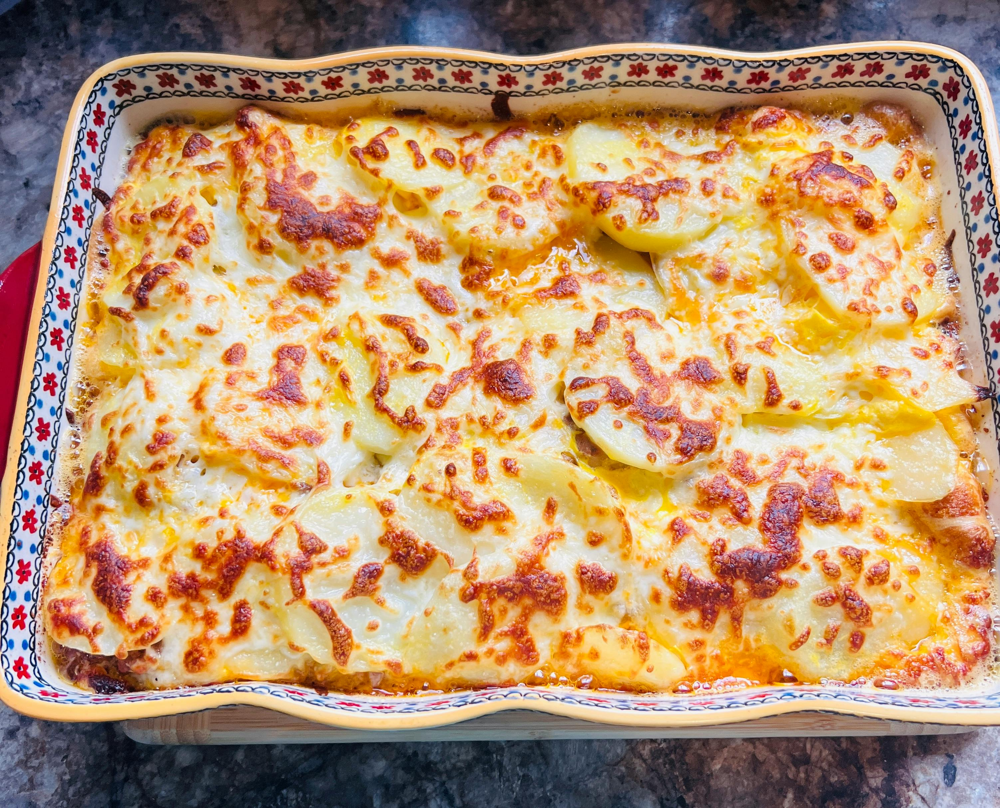

Holiday Ham and Potato Casserole

Casserole in Total time of 2 hrs 20 mins
Sometimes we use a small amount of meat in a recipe because that's what gives us the perfect ratio in relation to the
other ingredients. Other times we only use a small amount of meat because we don't have a large amount of money, but
either way, our guests shouldn't know which was our primary motivation. With that in mind, I'm very happy to be sharing
this Holiday Ham and Potato Casserole, also know as, "how to feed 8 people with one pound of ham, whether you have to or
not."
ingredients
- ¼ cup unsalted butter
- 1 cup diced yellow onion
- ¼ cup all-purpose flour
- 2 cups heavy cream
- 2 cups whole milk
- 2 teaspoons kosher salt, divided, or to taste
- ½ teaspoon freshly ground black pepper
- ¼ teaspoon cayenne pepper
- ⅛ teaspoon freshly grated nutmeg
- ¼ teaspoon Worcestershire sauce
- 2 teaspoons chopped fresh thyme leaves
- 4 ½ pounds russet potatoes, peeled and sliced 1/4 inch thick
- 8 ounces grated sharp white Cheddar cheese
- 1 pound thinly sliced ham
Steps
- Gather ingredients. Preheat the oven to 350 degrees F (175 degrees C).
- Heat butter in a pot over medium heat. Add onions and sauté with a pinch of salt until translucent, about 5 minutes.
- Add flour and cook, stirring, just to take off that starchy, raw edge, about 2 minutes.
- Pour in heavy cream and whisk to combine. Whisk in milk. Cook, stirring, over medium-high heat until it just starts to
simmer and thicken up.
- Add 1 teaspoon salt, pepper, and cayenne. Grate in nutmeg.
- Turn off heat. Stir in Worcestershire and fresh thyme leaves. Reserve until needed.
- Cover the bottom of a deep 10x15-inch casserole dish with about 25% of the reserved sauce.
- Add a layer of sliced potatoes, seasoning the tops with some of the remaining salt as desired; ladle over 1/3 of the
sauce and sprinkle over 1/3 of the grated Cheddar cheese. Layer in ½ of the sliced ham.
- Place another layer of sliced potatoes on top and season with salt. Ladle over ½ of the remaining sauce; repeat layering
with Cheddar cheese and ham.
- Place last layer of potatoes on top. Ladle over remaining sauce and spread out with a spatula. Sprinkle over remaining
Cheddar cheese.
- Bake uncovered in the preheated oven until browned, bubbling, and potatoes are very tender, about 1 ½ hours. Let cool
for 15 to 20 minutes before serving.
Home